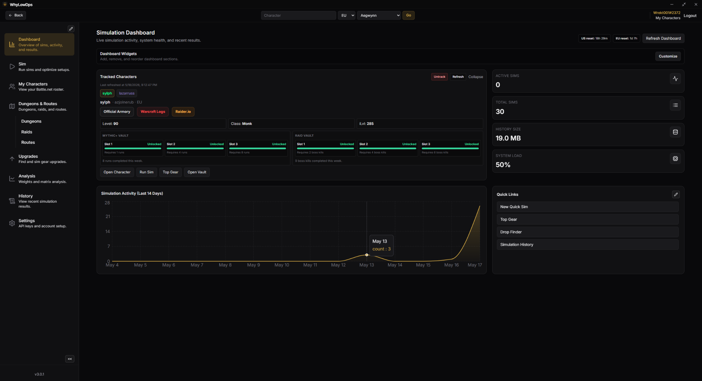
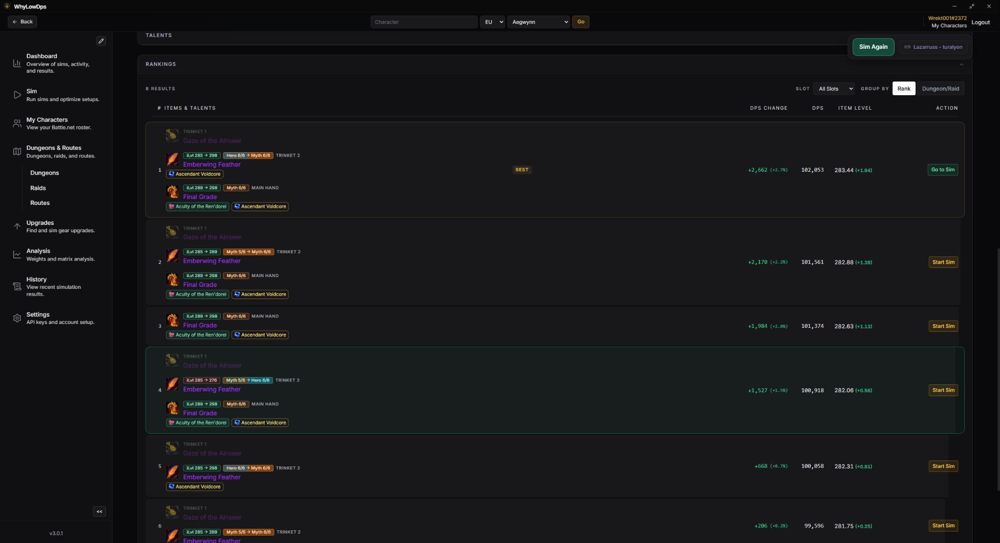
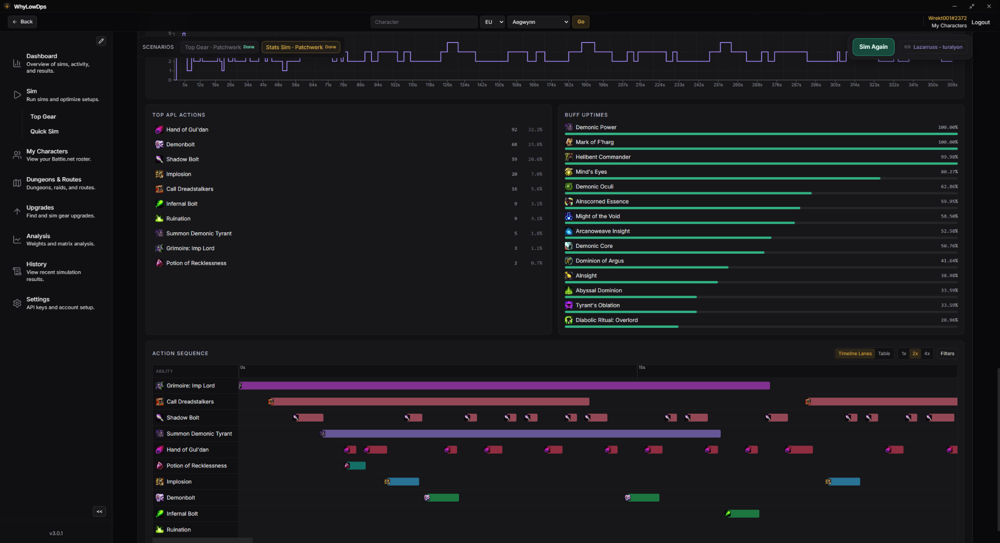
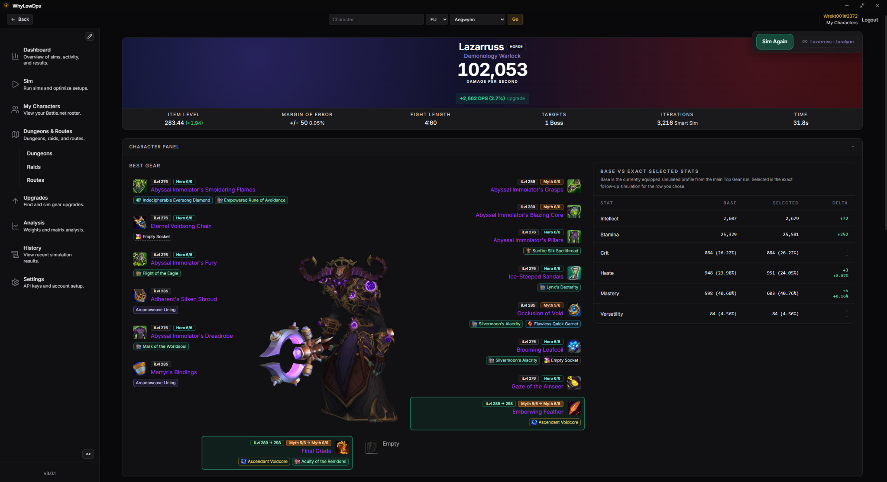
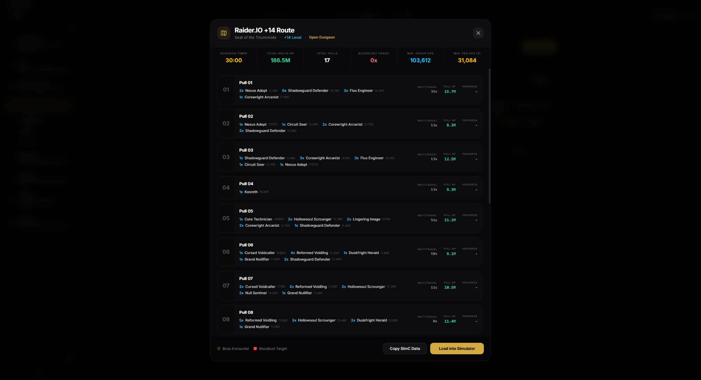
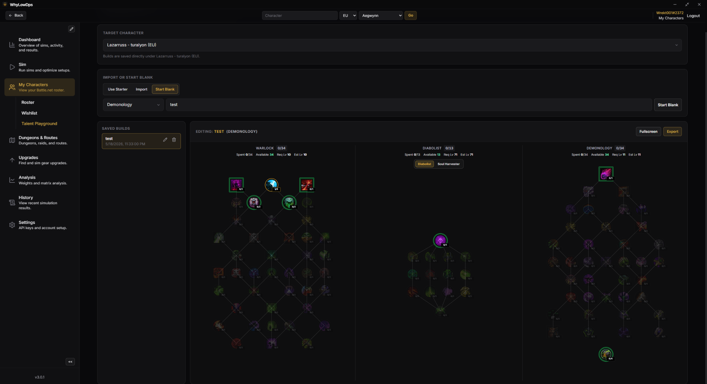
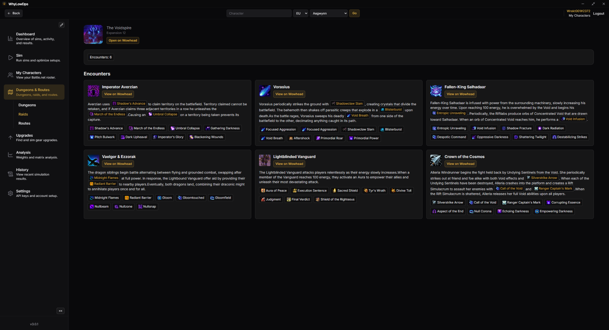
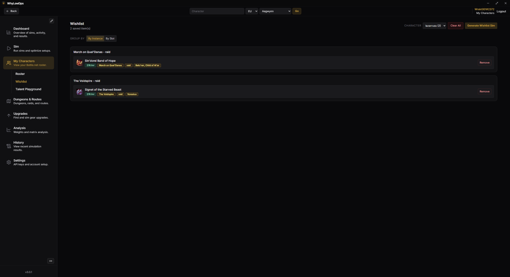

Simulation workflows
Run local sims, compare scenario results, review damage breakdowns, and keep your sim history organized.
Windows desktop app - Local-first simulation workflow
WhyLowDPS is built around the player and their characters: local SimulationCraft runs, sim history, route-aware setups, vault tracking, seasonal data, upgrade planning, and wishlists without turning the app into a guild-management platform.

What it is
The app focuses on the loop players actually repeat: import or save character data, run sims, compare results, understand upgrades, and keep track of what to chase next.
Run local sims, compare scenario results, review damage breakdowns, and keep your sim history organized.
Save routes from SimC strings and reuse them later when you want to sim around a specific dungeon route.
Use Top Gear, drop finder, crest upgrades, trinket combinations, tier decisions, and consumable comparisons.
Group wanted items by character so you can track what you need, where it drops, and who needs it.
Browse current dungeons, raids, encounters, affixes, and useful seasonal context directly in the app.
Your Battle.net API credentials are required for the app and are stored locally on your machine only.
Inspect timeline casts, action sequences, stat weights, and result deltas when validating upgrades.
Save and revisit builds per character, then compare talent setups directly against simulation outcomes.
Reuse saved routes, profiles, and history so each sim pass starts from your real progression context.
Screenshots
These screens show the current direction of the app: practical, information-heavy, and focused on character decisions.
Ranked results, DPS deltas, item levels, selected gear, and a direct path back into the sim workflow.







Setup
WhyLowDPS uses Blizzard APIs for game and character data. To keep the app user-owned and avoid shipping shared credentials, each user must generate their own Battle.net API credentials and enter them in the app.
Data sources
The app currently uses Blizzard APIs for game data, GitHub for releases and release-published data refreshes, and Raidbots-related data where needed for consumables, items, and simulation workflows.
Battle.net API credentials are required, stored locally, and are not uploaded or shared by the application.
Ready to test it?
Feedback is welcome - the app is actively evolving around real player usage.